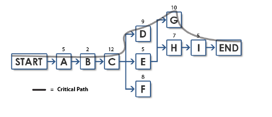
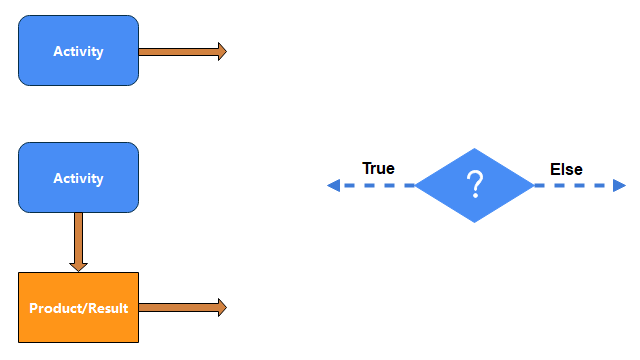
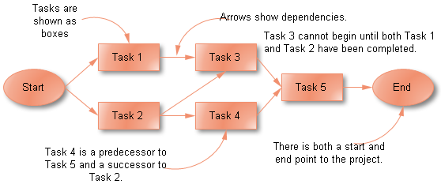
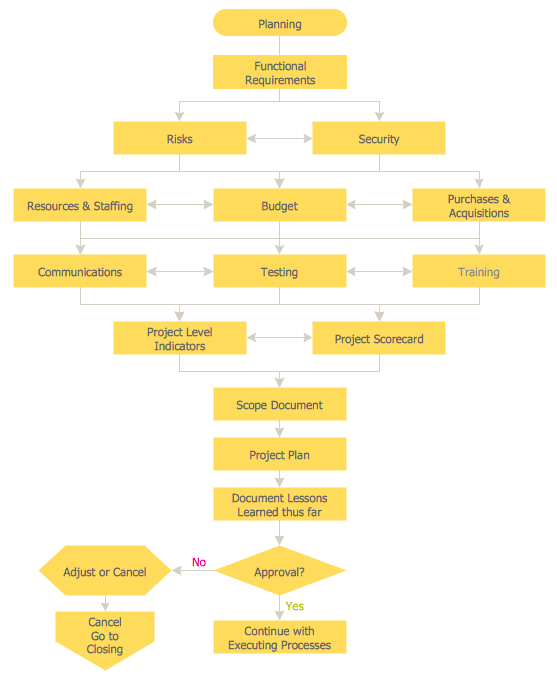

An activity network is an acyclic graph with non-negative weights and with a unique source and destination.
A
project consisting of a set of activities and precedence relationships can be represented by an activity network and the
mathematical analysis of the network provides useful information for managing the project.

Representation of Activity Network Diagram
These symbols are used to complete the diagram by representing the network entities through the symbols. So, in order to make an activity network diagram, you should know these basic symbols.

There are four symbols extensively used for the activity network diagram. They are as follows.
Rectangle with rounded Corners
Arrow
Diamond
Rectangle Box
Rules for Drawing Activity Network Diagram
All the preceding activities must be completed before the project can begin.
The arrows represent the logical precedence of the project.
The two nodes should be connected with one activity that means every activity is depicted with one arrow.
The activities should not have the same head and tail events.
Give each activity a unique number. The head node (ending point) should be greater than the tail node (starting point).
The arrows should not be intersected.
Don't make the curved or bent arrows but straight
Every activity must have the predecessor and the successor activity except for the starting and ending points.
Examples of Activity Network Diagram
Example 1

Example 2

Pros of Activity Network Diagram
Activity Network Diagrams started out as an engineering and construction project management tool.
Critical Path Analysis draws on this methodology to identify and standardize medical management activities.
It measure the duration of the whole project.
Plan, organizes, and manage the project efficiently
Estimate how many activities are left to make your project complete.
Cons of Activity Network Diagram
These diagrams are time-consuming.
As the project grows, the diagram becomes more complex, and hence it is more vulnerable to errors.
We have to consult the diagram maker to do this task.